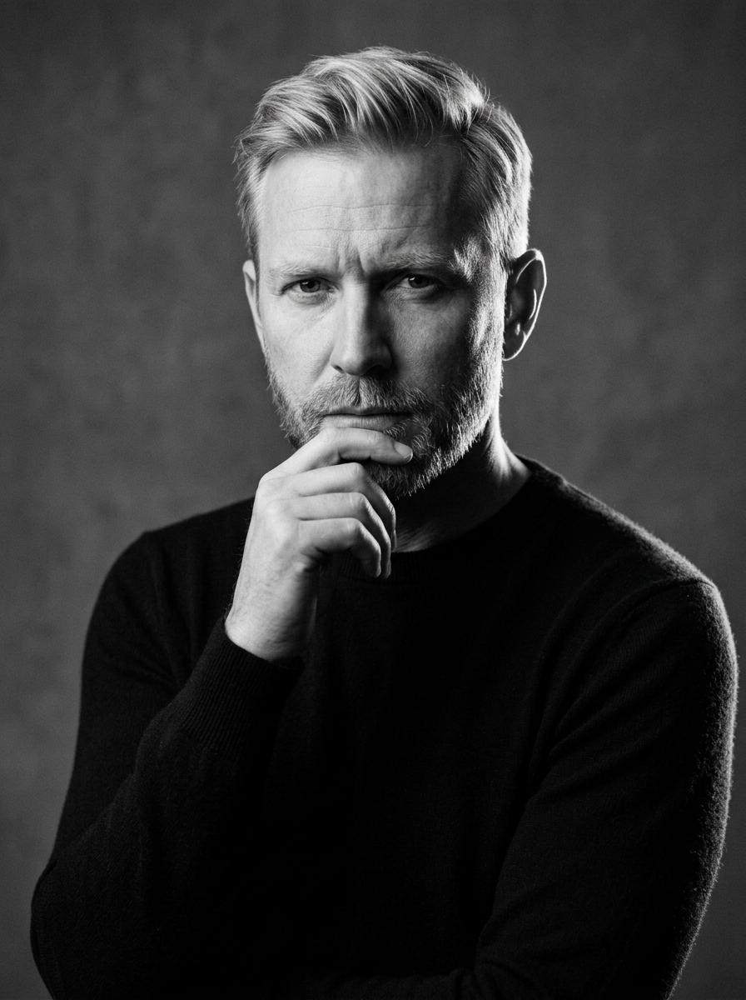

Founder & Creative Director
Henrik Lindqvist
“True gastronomy is an act of listening. We do not invent flavors; we create the thermal and microbial conditions for nature to reveal itself.”
Core Technique
Terroir Conceptualization